Права в базах данных — одной матрицей
SQL Server, Firebird и MySQL. Строки — представления, столбцы — пользователи, а доступ — это галочка. Создавайте пользователей, выдавайте и отзывайте права и откатывайте ошибки за секунды, без единой строки T-SQL.
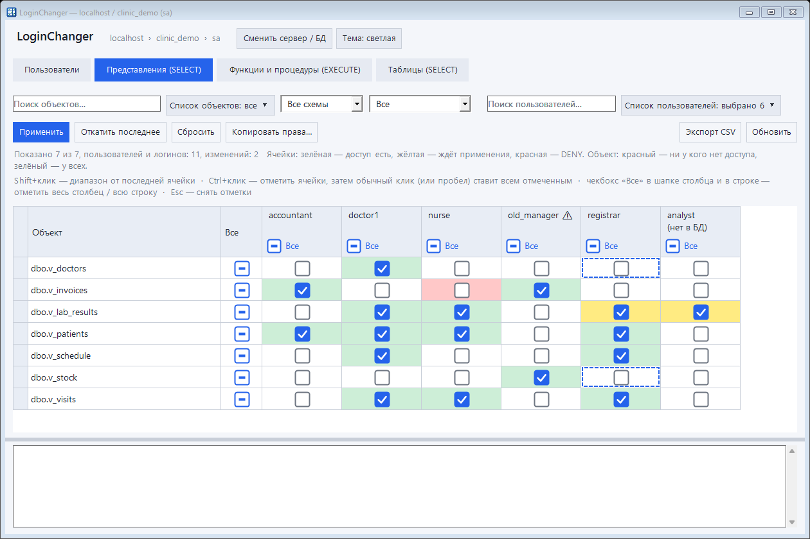
Знакомая боль администратора
В SSMS выдать доступ к десяти представлениям пяти пользователям — это полсотни кликов или скрипт, который потом надо проверять.
| Задача | Через SSMS / скрипты | В LoginChanger |
|---|---|---|
| Посмотреть, у кого есть доступ к объекту | Свойства каждого пользователя или запросы к каталогам | Вся картина в одной таблице |
| Выдать права 5 пользователям на 10 объектов | ~50 диалогов или ручной скрипт | Выделить диапазон Shift+клик → «Применить» |
| Завести 20 сотрудников с одинаковыми правами | Скрипт, пароли придумывать вручную | «Массовое создание» + шаблон, пароли сгенерированы |
| Ошибся и выдал лишнее | Искать и откатывать руками | Кнопка «Откатить последнее» |
| Логин есть, но в базе его нет (или наоборот) | Разбираться с «сиротами» и SID | Программа покажет и предложит решение |
Всё для ежедневной работы с доступом
Небольшая утилита, которая закрывает почти все рутинные операции с правами.
Матрица прав
Представления — SELECT, процедуры и функции — EXECUTE, таблицы — SELECT. Зелёные ячейки — доступ есть, красные — запрещено.
Массовая расстановка
«Все» по столбцу и по строке, диапазон по Shift, выбор ячеек по Ctrl. Крупные чекбоксы, срабатывают по клику в любом месте ячейки.
Быстрый поиск и фильтры
Поиск по словам, исключение -слово, схема, режим «выдано / не выдано / изменено» и выпадающие списки с галочками.
Редактор описаний с ИИ
Вкладка «Описания»: правка в таблице, импорт из CSV/XLSX, правила и предложения ИИ (любой OpenAI-совместимый сервис, в том числе локальная модель). Ничего не пишется, пока вы не нажмёте «Записать»; есть откат.
Не только SELECT
INSERT, UPDATE, DELETE и REFERENCES включаются в настройках. Над матрицей появляется выбор права — те же галочки, откат и подсветка.
Окно настроек
Права на вкладках, длина паролей, таймауты, подтверждения, формат CSV, срок журнала, папка шаблонов, тема — всё в одном месте.
Описания объектов рядом
Свойство MS_Description (а в Firebird и MySQL — комментарии) показывается возле имени, поиск работает и по описанию. Не нужно гадать, что за AN_ALL_BANK_LINES.
Быстрое создание
Новый логин и пользователь БД с генератором пароля (8 символов, легко вводить), права по шаблону или «как у другого».
Массовое создание
Вставьте список логинов — получите готовую таблицу «логин — пароль — результат» и экспорт в CSV.
Откат последнего применения
Все изменения идут одной транзакцией, а после применения их можно отменить одной кнопкой.
Три СУБД в одной программе
SQL Server работает «из коробки», Firebird и MySQL — через уже установленные в Windows ODBC-драйверы. Один и тот же привычный интерфейс.
«Сироты» и логины без БД
Логин есть, а пользователя нет? Пользователь есть, а логина нет, даже учётка Windows удалена? Всё это выявляется и чинится.
Защита администраторов
sa, dbo, sysadmin и db_owner не показываются и не меняются. Пароли не хранятся и не попадают в журнал.
Журнал и экспорт
Каждое действие — в окне журнала и в файле. Матрицу и список пользователей можно выгрузить в CSV (открывается в Excel).
Как это выглядит
Нативный интерфейс Windows, светлая и тёмная тема, адаптивная вёрстка.
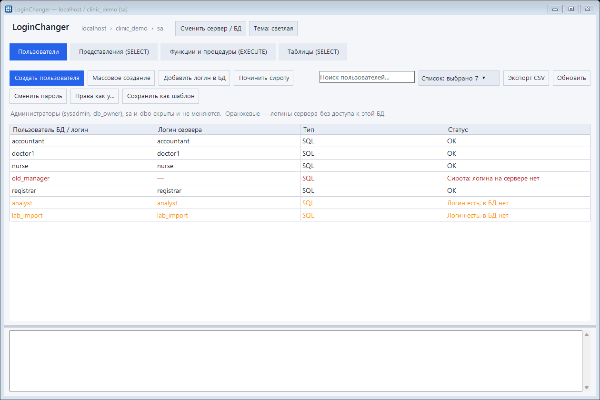
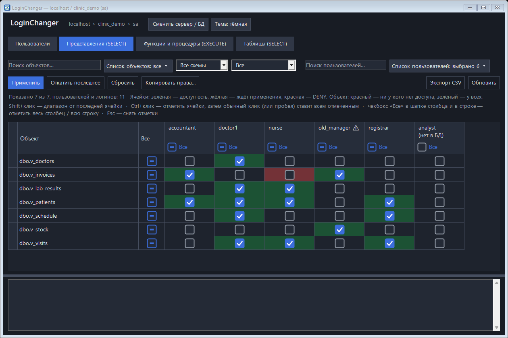
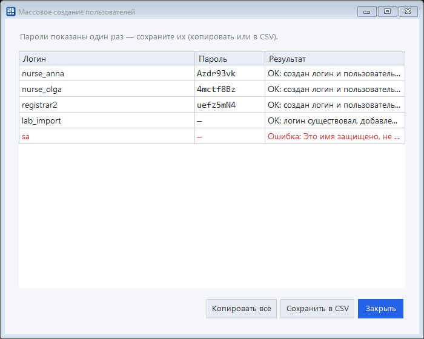
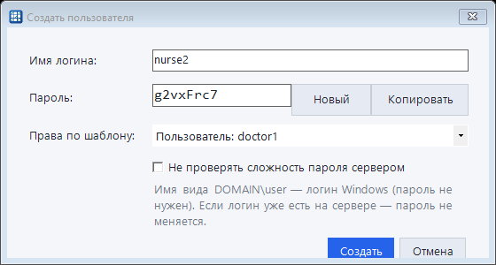
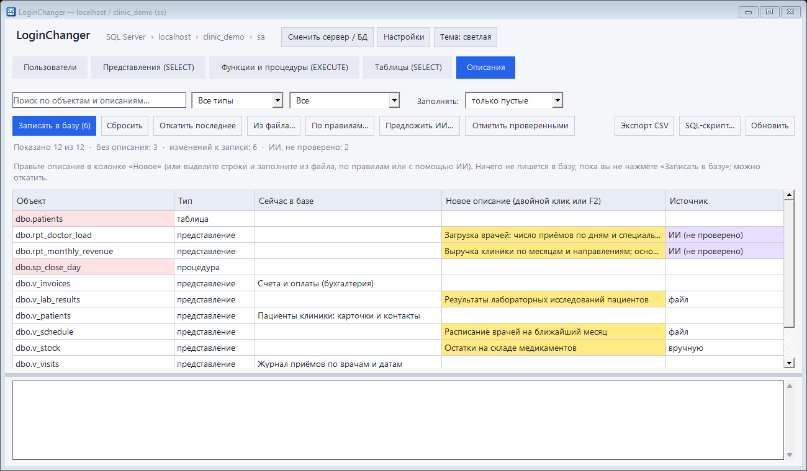
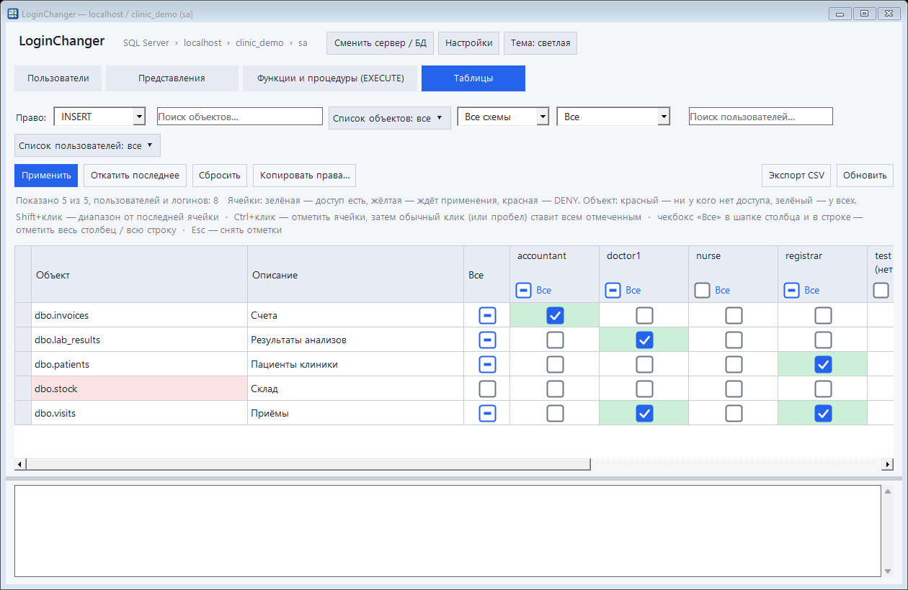
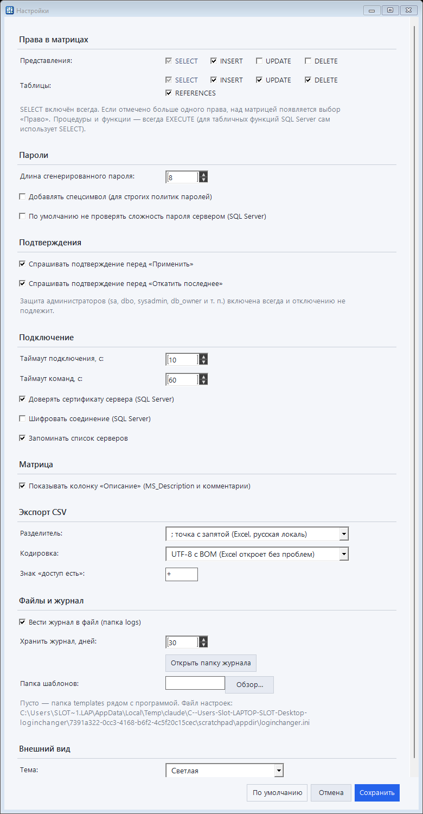
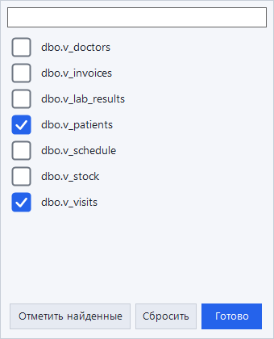
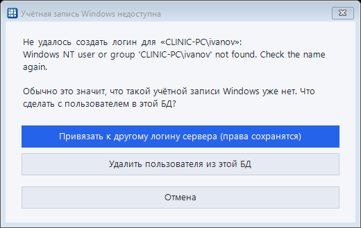
Одна матрица — разные СУБД
Выберите СУБД на экране подключения, остальное работает одинаково: те же вкладки, фильтры, откат и экспорт.
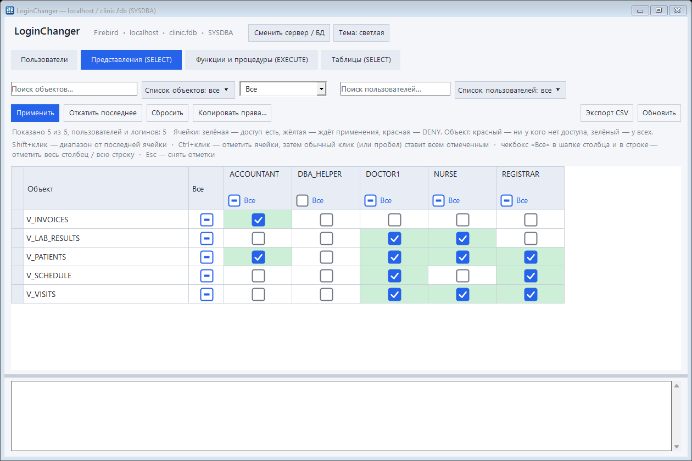
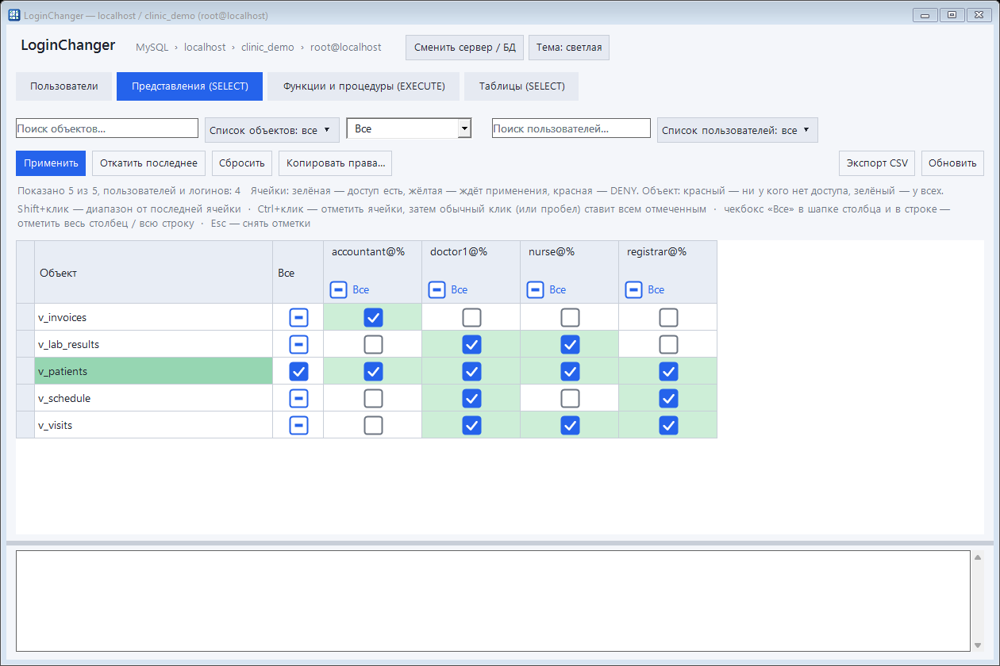
| СУБД | Подключение | Особенности |
|---|---|---|
| SQL Server 2012–2022 | встроенный клиент | «сироты», логины без базы, DENY, откат одной транзакцией |
| Firebird 3+ | ODBC | пользователи общие для сервера, права на объекты базы |
| MySQL 8 | ODBC | имя@хост; DDL не откатывается транзакцией — при ошибке выполняются обратные команды |
| PostgreSQL | в планах | |
Три шага до результата
Никакой установки: скачали, запустили, подключились.
Подключитесь
Выберите сервер (поиск найдёт локальные и сетевые), войдите через Windows или sa. Только после успешного входа появится выбор базы.
Расставьте галочки
Откройте вкладку «Представления» или «Функции и процедуры», отметьте нужное. Изменения подсвечиваются и пока ничего не меняют.
Примените или откатите
«Применить» — одна транзакция, при ошибке ничего не изменится. Передумали — «Откатить последнее».
Безопасно по умолчанию
Администраторы неприкосновенны
sa, dbo, члены sysadmin и db_owner скрыты и защищены от изменений на уровне программы.
Всё или ничего
Применение и откат идут одной транзакцией. Любая ошибка — полный откат.
Никаких секретов на диске
Пароли подключения не сохраняются, в журнале пароли заменены на ***. Программа ничего не отправляет в интернет.
Частые вопросы
Коротко о главном
Что нужно для запуска?
Windows 7 SP1 / 10 / 11 / Server 2019 с .NET Framework 4.0+ (в Windows 10 и новее он уже есть) и права администратора SQL Server: вход через Windows или sa. Дополнительные драйверы не нужны.
Это точно портативно?
Да. Один файл. Рядом создаются только папки logs, templates и файл loginchanger.ini (сервер, база, тема — без паролей).
С какими СУБД и версиями работает?
SQL Server 2012–2022 (проверено на 2019), Firebird 3+ (проверено на 5.0) и MySQL 8 (проверено на 8.0). Для Firebird и MySQL нужен установленный ODBC-драйвер. Если найдёте проблему на другой версии — напишите в Issues.
Что если я случайно выдал лишнее?
Нажмите «Откатить последнее» — обратные команды выполнятся одной транзакцией. Откат хранится до закрытия программы; все команды также записаны в журнал.
А PostgreSQL?
В планах, следующий на очереди. Следите за репозиторием или поставьте звезду, чтобы не пропустить релиз.
Откат работает в MySQL?
Да, но у MySQL права нельзя откатить транзакцией: при ошибке программа сама выполняет обратные команды для уже применённых изменений, а «Откатить последнее» возвращает прошлое состояние.
Как подключить ИИ для описаний и что при этом уходит наружу?
В «Настройках» укажите адрес любого OpenAI-совместимого сервиса (OpenAI, Ollama, LM Studio…), модель и при необходимости ключ (хранится зашифрованным средствами Windows). Отправляются имена объектов, названия столбцов и, если не отключено, тексты определений; данные таблиц не отправляются никогда. Для локального адреса подтверждения не требуется; для внешнего — один вопрос перед первой отправкой. Результат — только черновик: ваш «Записать в базу» обязателен.
Можно ли выдавать права не только на чтение?
Да. В «Настройках» отметьте INSERT, UPDATE, DELETE (для таблиц ещё REFERENCES) — над матрицей появится выбор права. Процедуры и функции получают EXECUTE.
Это бесплатно?
Да, лицензия MIT: используйте в работе, меняйте, распространяйте.
Попробуйте за минуту
Скачайте, запустите, подключитесь — и убедитесь, что управлять доступом может быть приятно.
English: LoginChanger is a portable, ~150 KB Windows tool that manages SQL Server, Firebird and MySQL users and permissions through a checkbox matrix (views/procedures × users), with one-click undo, bulk user creation and password generation. No installer, no extra drivers. Read more.